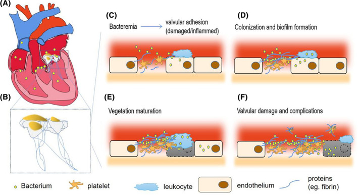
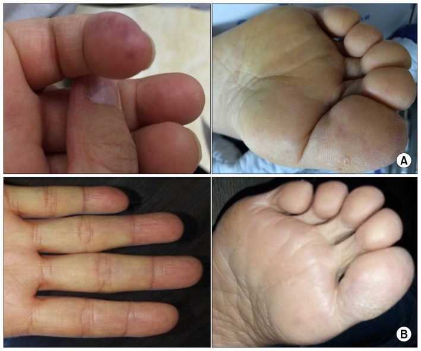
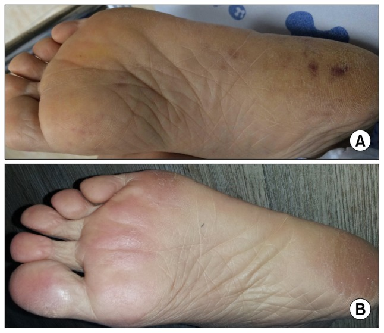
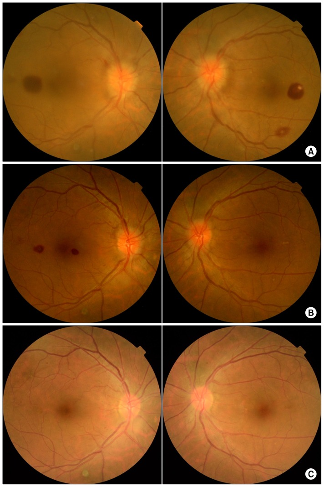
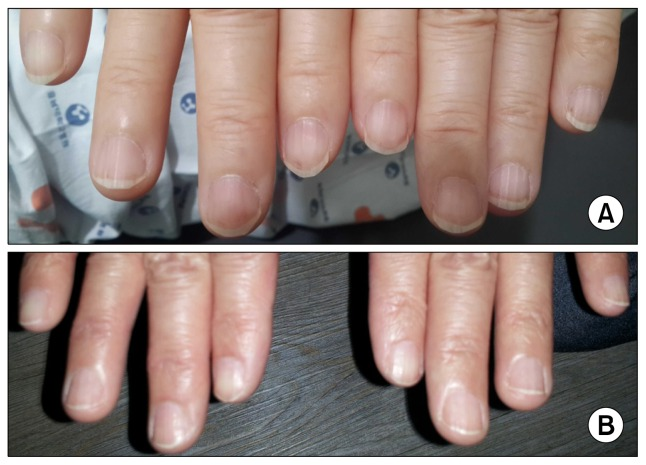
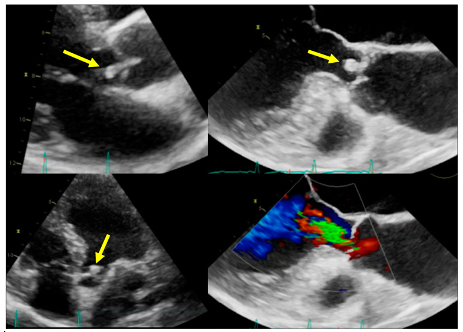
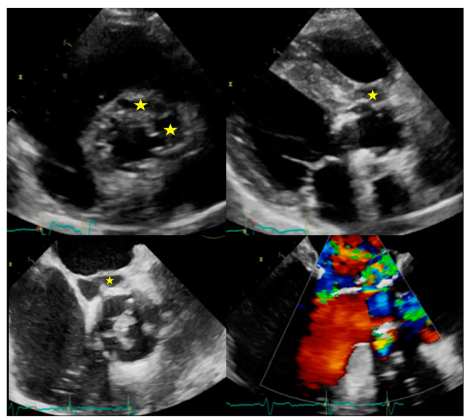

定義與定位
這個病是什麼？在分類樹的哪個位置？跟隔壁的病靠什麼分開？
| 項目 | 重點 |
|---|---|
| 本質 | 心內膜／瓣膜／心內人工材質的感染性贅生物（vegetation），是「心臟病 ＋ 感染症」的交集 |
| 分類位置 | 依瓣膜：自體瓣膜（NVE, native valve endocarditis） vs 人工瓣膜（PVE, prosthetic valve endocarditis） vs 裝置相關（CIED-IE；CIED ＝ cardiac implantable electronic device）；依側別：左側（多） vs 右側（注射藥癮、導管）；依來源：社區型 vs 醫療照護相關（比例逐年上升，抗藥菌多） |
| 病程分型 | 急性（數天至兩週，毒性強，典型 S. aureus） vs 亞急性 SBE（數週至數月，低毒力，典型 viridans streptococci） |
| 易感族群 | 人工瓣膜／TAVR（transcatheter aortic valve replacement）／瓣膜修補用的人工材質（風險最高）、曾患 IE、注射藥癮者（侵犯三尖瓣的右側 IE，主要菌 S. aureus）、心內電子裝置的導線、長期血液透析（見 Dialysis）、退化性 Aortic stenosis↗ 與 Bicuspid aortic valve↗、未矯正的發紺型先天性心臟病、心室輔助器。有逆流的 Mitral valve prolapse↗ 與 HCM 屬中度風險——列在 Duke 次要準則，但不列入預防性抗生素適應症 |
流行病學：世代已經換了一輪
過去的典型是「年輕人 ＋ 風濕性心臟病 ＋ viridans streptococci」，現在是「高齡多共病 ＋ 退化性瓣膜病／人工瓣膜／心內裝置 ＋ S. aureus」，且醫療照護相關感染的比例逐年上升。整體發生率不降反微升——人口老化與瓣膜置換、心內裝置普及，抵銷了風濕性心臟病的減少。
病因與機制
為什麼會發生？病生理鏈條長什麼樣？——這一節寫好，下面的「臨床表現」就不用背。

IE 的形成序列：菌血症 → 細菌黏附受損／發炎內皮 → 血小板、纖維蛋白、白血球與菌落形成 biofilm-rich vegetation → 瓣膜破壞與併發症。成熟贅生物可向內造成穿孔／逆流／膿瘍，向外脫落栓塞，並持續向血中釋菌。Source: Liesenborghs et al., Clin Microbiol Rev 2021, Figure 1（CC BY 4.0）。致病菌 ↔ 臨床情境對照（全篇最該背熟的一張表）
| 致病菌 | 對應情境／線索 | 病程 | 要順手做的事 |
|---|---|---|---|
| Staphylococcus aureus | 已開發國家第一名；注射藥癮、血管導管、Dialysis、心內裝置 | 急性、破壞快 | 找入侵門戶與轉移性感染灶；MRSA vs MSSA 決定用藥 |
| Viridans group streptococci | 口腔正常菌叢；牙科處置／牙周病；本來就有瓣膜病 | 亞急性 SBE | 問牙科史、看口腔衛生 |
| Streptococcus gallolyticus（舊稱 S. bovis） | 大腸腫瘤／大腸癌、大腸息肉；老年人 | 亞急性 | 一定要安排大腸鏡 ← 這是這隻菌唯一要記的事 |
| Enterococcus（多為 E. faecalis） | 泌尿道器械操作／攝護腺處置、老年男性；也與大腸病灶有關 | 亞急性 | 查泌尿道來源；治療需協同殺菌（見治療節） |
| 凝固酶陰性葡萄球菌（CoNS） | 早期人工瓣膜 IE、心內裝置；生物膜高手 | 亞急性但難治 | 別當成汙染菌——人工瓣膜病人的 CoNS 要當真 |
| HACEK 群 | 口腔叢生的挑食型革蘭氏陰性桿菌 | 亞急性、贅生物大、易栓塞 | 現代自動化血培養多半 5 天內長得出來，已不算「培養陰性」 |
| Coxiella burnetii（Q fever） | 接觸牛羊、農牧；慢性、常侵犯人工瓣膜 | 極慢 | 血清學／PCR；培養不會長 |
| Bartonella（henselae、quintana） | 貓接觸、街友／體蝨、酒癮 | 極慢 | 血清學／PCR；培養不會長 |
| 黴菌（Candida、Aspergillus） | 長期中央靜脈導管、免疫抑制、人工瓣膜 | 亞急性 | 贅生物大、栓塞多、幾乎都要開刀 |
臨床表現
典型病人長什麼樣？哪些症狀是幾乎一定有、哪些是提示性的？
- 典型：發燒（最常見，約八成以上）＋ 心雜音；亞急性者是拖了數週的倦怠、體重下降、盜汗、食慾不振（很像惡性腫瘤或結核）
- 提示性：新出現或改變的逆流雜音（單純既有雜音變大不算數）、脾腫大、貧血、ESR/CRP 上升、顯微血尿、瘀點（petechiae，結膜與口腔黏膜——最常見的周邊表徵）
- 周邊表徵（因為多數病人現在很早就開始抗生素，實際已較少見，但仍是經典的床邊線索）：
| 表徵 | 痛不痛 | 機制 | 位置 |
|---|---|---|---|
| Osler node | 會痛、有壓痛 | 免疫複合體沉積（血管炎） | 手指、腳趾指腹的紫紅色結節 |
| Janeway lesion | 不痛 | 敗血性栓塞（微膿瘍） | 手掌、腳掌的出血性斑點 |
| Roth spot | — | 免疫／出血 | 視網膜出血，中央蒼白 |
| Splinter hemorrhage | — | 微栓塞／血管炎 | 指甲下縱向線狀出血 |
- 少見但重要（常是第一個表現）：
- 腦栓塞或腦膜炎樣表現（見 Stroke↗）——約兩成的左側 IE 以中風表現
- 急性瓣膜逆流造成的急性肺水腫或心因性休克（見 Shock、Heart failure）
- 右側 IE：反覆的敗血性肺栓塞（多發性、周邊、可空洞化的肺結節）＋ 咳嗽咳血，常常聽不到雜音
- 新出現的房室傳導阻滯或 PR 間期延長 → 高度暗示主動脈瓣環膿瘍；此外還有腎絲球腎炎、脾梗塞、黴菌性動脈瘤（mycotic aneurysm）
→ 相關主訴流程：Fever（Workup）、Dyspnea

Osler nodes：指／趾腹的隆起紅紫結節，典型會痛；圖中下排是治療後消退。
Janeway lesions：掌蹠的平坦、出血性斑疹，典型不痛；和 Osler 最實用的切點是「痛 vs 不痛」。
Roth spots：視網膜出血中央有淡色／白色中心，不是 IE 專屬，但在合適臨床情境下支持免疫或血管現象。
Splinter hemorrhages：甲下縱向紅褐線；若在近端甲床、同時有發燒與菌血症，才較支持 IE。以上四圖 Source: Park et al., Korean J Thorac Cardiovasc Surg 2016, Figures 1–4（CC BY-NC 4.0）。診斷
診斷標準是什麼？要開哪些檢查？哪個是 gold standard？
診斷是「血液培養 ＋ 心臟影像」兩隻腳，Duke criteria 只是把這兩隻腳寫成計分。本篇主敘述採 2023 Duke-ISCVID criteria；判定門檻三個版本（1994／2000／2023）完全一致，改的只是「什麼算主要準則」——所以看到別人講 Duke criteria 時，先確認他講的是哪一版。
Duke criteria：記門檻 ＋ 兩大主要準則就夠
- 門檻一句：2 個主要，或 1 主要 ＋ 3 次要，或 5 個次要 ＝ definite（臨床）。贅生物／栓子／心內膿瘍檢體驗出病原或顯示活動性心內膜炎 ＝ definite（病理）。
- 主要準則①：血液培養——IE 典型菌（viridans strep、S. gallolyticus、HACEK、S. aureus、腸球菌等）≥2 套分開的血培養套組陽性；非典型菌 ≥3 套陽性。（Coxiella 的 anti-phase I IgG ＞1:800、Bartonella 血清學、瓣膜或血液的 PCR／定序，另計為主要準則。）
- 主要準則②：心內膜受累的影像證據——超音波見贅生物、膿瘍、假性動脈瘤、心內瘻管、瓣膜穿孔或瓣膜瘤、人工瓣膜新出現的裂開；或心臟 CT 的瓣周病灶、[¹⁸F]FDG PET/CT 的人工瓣膜／人工血管／裝置導線異常代謝（植入滿 3 個月以上才算主要準則，未滿 3 個月只算次要）。
- 次要準則一行記完：易感因素（心臟病或注射藥癮）、發燒 ＞38.0°C、血管現象（含 Janeway、敗血性肺梗塞、腦／脾膿瘍）、免疫現象（含 Osler、Roth spot、RF 陽性、腎絲球腎炎）、不符合主要準則的微生物學證據。
血液培養：怎麼抽（最容易做錯的一步）
| 要件 | 做法 | 為什麼 |
|---|---|---|
| 時機 | 在給任何抗生素之前；2023 ESC 建議約 30 分鐘內抽完 3 套，不必等發燒 | 一劑抗生素就足以讓培養轉陰；IE 的菌血症是持續性（continuous），任何時間都抽得到 |
| 套數與部位 | 至少 3 套，取不同的周邊靜脈穿刺點、各自重新消毒，每套約 10 mL 分裝需氧／厭氧瓶 | 提高陽性率、區分皮膚汙染菌；血量是陽性率最重要的單一變數 |
| 不要做 | 從留置導管抽（除非同時做配對培養判定導管相關感染） | 導管內腔常有定殖菌，偽陽性高 |
影像：TTE 先做，但陰性不能排除
| 步驟 | 做法 |
|---|---|
| 第一線 | TTE（transthoracic echocardiography）（見 Echocardiography）——所有懷疑 IE 者都先做 |
| 一定要加 TEE（transesophageal echocardiography） | ① TTE 陰性但臨床仍高度懷疑；② 人工瓣膜或心內裝置；③ 懷疑瓣周併發症（膿瘍、瘻管、裂開）；④ 由靜脈轉口服抗生素之前。初次陰性而懷疑度仍高 → 5–7 天內重做；一出現新併發症（新雜音、栓塞、發燒不退、傳導阻滯）立刻再做 |
| 心臟 CT／[¹⁸F]FDG PET/CT | 超音波不確定時確認瓣周解剖併發症；PET/CT 建議用於 possible 人工瓣膜 IE。腦部與全身影像：有症狀者建議做（腦栓塞、黴菌性動脈瘤、脾膿瘍） |
要開的檢查：Blood culture↗（3 套、抗生素前）、Echocardiography（TTE → TEE）、ECG（每天看：新的房室傳導阻滯 ＝ 瓣環膿瘍警訊）、CBC／CRP／ESR、尿液檢查（血尿、紅血球圓柱）、腎功能、必要時大腸鏡（S. gallolyticus 或腸球菌）

同一例主動脈瓣 IE：左側 TTE 只隱約看見 LVOT 內贅生物；右側 TEE／TOE 把可擺動贅生物與相關逆流顯示得更清楚。這就是高懷疑度時 TTE 陰性仍要接 TEE 的影像理由。
IE 局部侵犯：上排星號示 peri-aortic abscess 的無回音腔；下排示與心血管腔相通的 pseudoaneurysm，TEE 加 color Doppler 可顯示瘻口血流。兩圖 Source: Sordelli et al., J Clin Med 2020, Figures 1–2（CC BY 4.0）。鑑別診斷
要跟誰分清楚？靠什麼分？
| 要排除的 | 支持它的線索 | 怎麼排除 |
|---|---|---|
| 單純菌血症／導管相關感染（見 Sepsis↗） | 有明確的導管或其他原發灶；移除來源後迅速退燒、培養轉陰 | 追蹤血培養；S. aureus 菌血症一律做超音波（IE 比例高） |
| 非感染性心內膜炎：marantic／NBTE、Libman–Sacks | NBTE：惡性腫瘤（尤其腺癌）、DIC，栓塞多且分散；Libman–Sacks：SLE／抗磷脂症候群。兩者都不發燒、血培養陰性 | 血液培養持續陰性 ＋ 找腫瘤或自體抗體；贅生物常較小且在瓣膜閉合線 |
| 急性風濕熱 | 兒童青少年、前驅咽炎、遊走性多關節炎、舞蹈症、環形紅斑 | ASO／anti-DNase B；Jones criteria |
| 心房黏液瘤 | 發燒、體重下降、栓塞、姿勢相關的雜音（tumor plop） | Echocardiography 直接看到腫瘤附著在心房中隔 |
| 惡性腫瘤／淋巴瘤的不明熱 | 體重下降、盜汗但無雜音、無栓塞 | 走 Fever 流程 |
| 血管炎（如 ANCA 相關） | 血尿、腎功能惡化、紫斑——與 IE 的免疫現象幾乎一模一樣 | 這組最危險：IE 也會有低補體、RF、ANCA 偽陽性 → 先排除 IE 再談免疫抑制 |
治療
第一線是什麼？什麼情況升級？
抗生素
| 情境 | 處置 |
|---|---|
| 大原則 | 殺菌型（bactericidal）、高劑量、靜脈給藥、長療程；療程從第一次血培養轉陰那天起算。自體瓣膜 2–6 週；人工瓣膜 ≥6 週 |
| 經驗性：社區型 NVE 或 ≥12 個月的晚期 PVE | ampicillin ＋ 抗葡萄球菌 penicillin（cloxacillin／oxacillin）＋ gentamicin |
| 經驗性：早期 PVE（＜12 個月）或醫療照護相關 | vancomycin ＋ gentamicin ＋ rifampin |
| 經驗性：β-lactam 過敏 | vancomycin ＋ gentamicin（有人工材質時再加 rifampin） |
| 對 penicillin 敏感的鏈球菌（NVE） | penicillin G 或 ceftriaxone 4 週；穩定、無併發症者加 gentamicin 可縮為 2 週 |
| 葡萄球菌 | MSSA（NVE）：cloxacillin／oxacillin／nafcillin 或 cefazolin，4–6 週（不加 aminoglycoside）；MRSA（NVE）：vancomycin 或 daptomycin 10 mg/kg qd，4–6 週；PVE：再加 rifampin（總療程 ≥6 週）＋ gentamicin 前 2 週 |
| 腸球菌 | ampicillin ＋ ceftriaxone（雙 β-lactam）或 ampicillin ＋ gentamicin，通常 6 週 |
| HACEK／Coxiella | HACEK：ceftriaxone（NVE 4 週、PVE 6 週），不用 ampicillin，產 β-lactamase 者不少；Coxiella：doxycycline ＋ hydroxychloroquine ≥18 個月 |
- 靜脈轉口服（POET）：只在左側 IE、致病菌為鏈球菌／E. faecalis／S. aureus／CoNS，且臨床穩定、已接受 ≥10 天有效靜脈治療（心臟手術後 ≥7 天）、切換前 TEE 確認無膿瘍與局部進展時才考慮。
- 支持性：清除感染源與轉移性感染灶；注射藥癮者必須同時處理成癮，否則復發率極高。
手術：三大適應症
心衰竭、無法控制的感染、預防栓塞——所有手術時機都掛在這三個字底下。
- 時機：難治性肺水腫或心因性休克 → 緊急（＜24 小時）；心衰竭（未達休克）、局部無法控制的感染（膿瘍、假性動脈瘤、瘻管、贅生物變大、新出現房室傳導阻滯）、贅生物 ≥10 mm 且已栓塞過 ≥1 次或合併其他適應症、早期 PVE → 急迫（3–5 天內）。黴菌性與多重抗藥菌 IE 藥物幾乎治不好，也走手術。
- 特殊情境：CIED 相關 IE 要在經驗性抗生素期間就完整移除整套系統（導線 ＋ 產生器），不要拖；右側 IE 僅在嚴重三尖瓣逆流致右心室功能不全、反覆肺栓塞需呼吸器、殘餘贅生物 ＞20 mm 或侵犯左側時才開，能修補就修補。
併發症與預後
住院時要盯什麼？出院後會怎麼樣？
- 要盯的併發症：
- Heart failure——最常見、也是最主要的死亡原因與手術適應症（多因急性主動脈瓣或二尖瓣逆流）
- Stroke↗ 與全身性栓塞——左側 IE 最怕；栓塞風險在開始有效抗生素後的頭 1–2 週內下降最快
- 瓣周膿瘍 → 房室傳導阻滯（主動脈瓣位最常見）→ 每天看 ECG 的 PR 間期；黴菌性動脈瘤破裂可致命，有神經學症狀就做腦血管影像
- 其餘：敗血性肺栓塞（右側 IE）、脾梗塞／脾膿瘍、腎絲球腎炎與急性腎損傷、Sepsis↗ 與敗血性休克（見 Shock）、術後 Atrial fibrillation
- 預後因子（愈多愈差）：高齡、人工瓣膜 IE、S. aureus 或黴菌、心衰竭、瓣周膿瘍、腦部併發症、糖尿病與腎功能不全、有手術適應症卻沒開成。死亡率量級：院內約 15–30%、一年約 30%。
- 出院後：療程結束後再抽血液培養；區分 relapse（同一菌、通常 ＜6 個月 → 找殘留感染灶、評估手術） 與 re-infection（不同菌、通常 ＞6 個月）；長期追蹤瓣膜功能；衛教口腔衛生；注射藥癮者接受成癮治療
禁忌與陷阱
預防性抗生素：適應症已大幅限縮
| 項目 | 內容 |
|---|---|
| 高風險族群（只有三類） | ① 曾患 IE；② 人工瓣膜（含 TAVR）或以人工材質做過瓣膜修補；③ 未矯正的發紺型先天性心臟病，或以人工材質修補後（材質植入後 6 個月內；有殘餘分流或逆流則終生）。心室輔助器／心臟移植後瓣膜病變各指引列法不一、等級較弱 |
| 只給這些處置 | 需操作牙齦或牙根尖區域、或穿透口腔黏膜的牙科處置（拔牙、口腔手術等）。牙科 X 光、局部麻醉、矯正裝置、乳牙脫落，以及常規腸胃道／泌尿道／呼吸道內視鏡都不必給 |
| 用藥 | amoxicillin（或 ampicillin）2 g 單次，處置前 30–60 分鐘（兒童 50 mg/kg）。penicillin 過敏：cephalexin 2 g、cefazolin／ceftriaxone 1 g IV、doxycycline 100 mg 或 azithromycin 500 mg；clindamycin 已不再建議 |
| 最常漏掉的三件事 | ① CIED 相關 IE 不能靠牙科預防性抗生素預防；② 心臟手術與 CIED 植入的圍手術期預防（cefazolin）是另一回事，仍然要給；③ 日常口腔衛生與定期牙科照護，效益大於單次預防性抗生素 |
相關連結
- Fever — 不明熱的完整流程；IE 是「發燒 ＋ 新雜音」這條分支的主角
- Blood culture↗ — 抽法、套數、汙染菌判讀；Echocardiography — TTE 與 TEE 的適應症與判讀
- Aortic stenosis↗、Bicuspid aortic valve↗、Mitral valve prolapse↗ — 易感瓣膜；MVP 有逆流時屬中度風險，但不列入預防性抗生素適應症
- Heart failure、Stroke↗ — 最主要的死因與手術適應症；左側 IE 的栓塞併發症決定手術要不要延後
- Sepsis↗ — 菌血症的處置骨架與「先抽培養」的共同原則
- Dialysis — 長期透析導管是現代 IE 的重要族群；Cardiac auscultation — 新出現逆流雜音的辨認